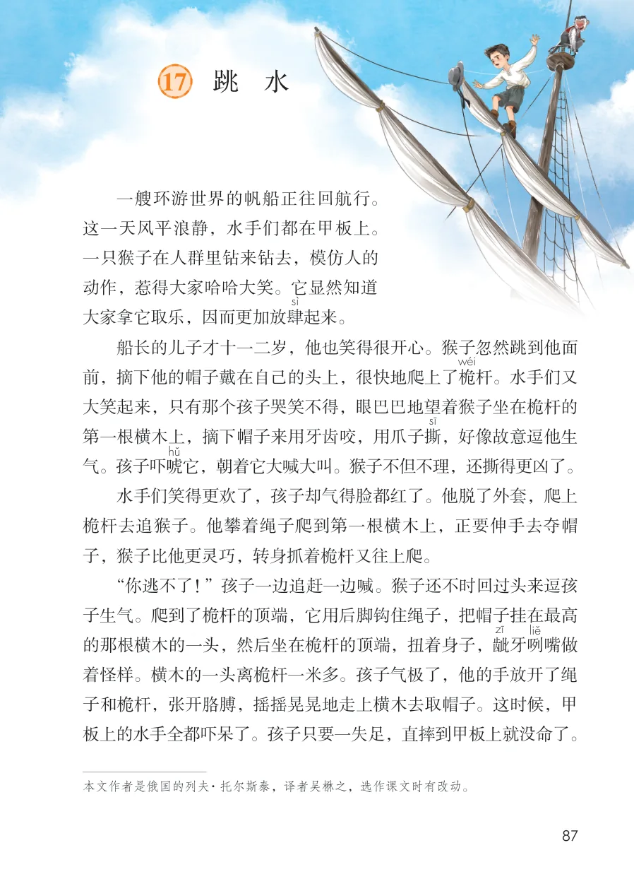
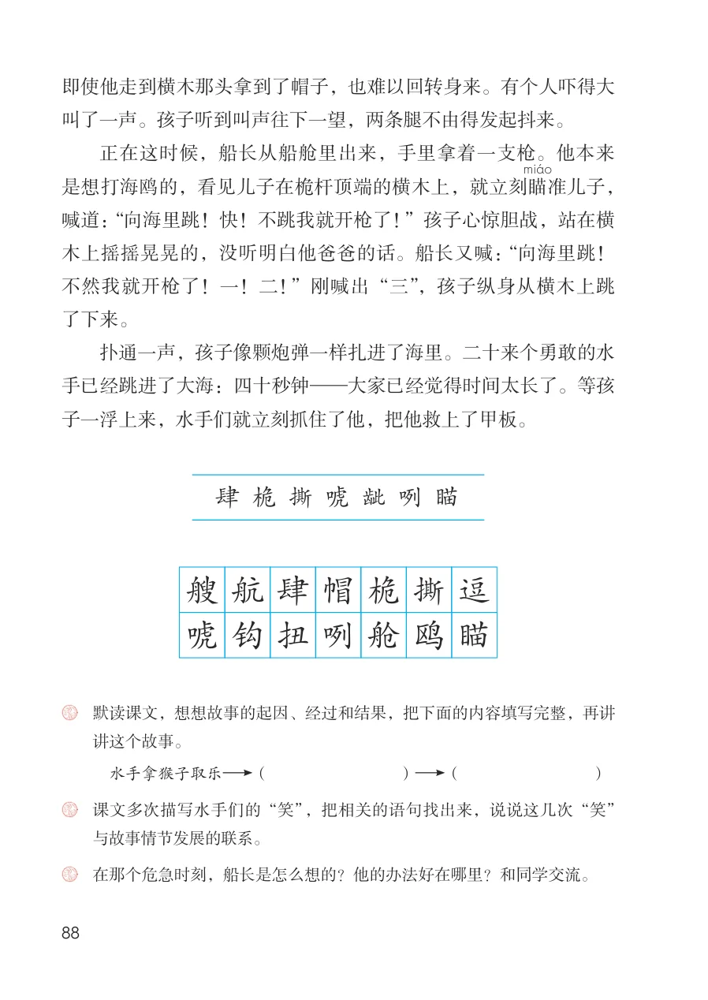

展开章节菜单
17 跳 水
一艘环游世界的帆船正往回航行。
这一天风平浪静，水手们都在甲板上。
一只猴子在人群里钻来钻去，模仿人的
动作，惹得大家哈哈大笑。它显然知道
大家拿它取乐，因而更加放肆
起来。
船长的儿子才十一二岁，他也笑得很开心。猴子忽然跳到他面
前，摘下他的帽子戴在自己的头上，很快地爬上了桅
杆。水手们又
大笑起来，只有那个孩子哭笑不得，眼巴巴地望着猴子坐在桅杆的
第一根横木上，摘下帽子来用牙齿咬，用爪子撕
，好像故意逗他生
气。孩子吓唬
它，朝着它大喊大叫。猴子不但不理，还撕得更凶了。
水手们笑得更欢了，孩子却气得脸都红了。他脱了外套，爬上
桅杆去追猴子。他攀着绳子爬到第一根横木上，正要伸手去夺帽
子，猴子比他更灵巧，转身抓着桅杆又往上爬。
“你逃不了！”孩子一边追赶一边喊。猴子还不时回过头来逗孩
子生气。爬到了桅杆的顶端，它用后脚钩住绳子，把帽子挂在最高
的那根横木的一头，然后坐在桅杆的顶端，扭着身子，龇
着怪样。横木的一头离桅杆一米多。孩子气极了，他的手放开了绳
子和桅杆，张开胳膊，摇摇晃晃地走上横木去取帽子。这时候，甲
板上的水手全都吓呆了。孩子只要一失足，直摔到甲板上就没命了。
查看教材原页（保留全部图片、注音与原始排版）

即使他走到横木那头拿到了帽子，也难以回转身来。有个人吓得大叫了一声。孩子听到叫声往下一望，两条腿不由得发起抖来。
正在这时候，船长从船舱里出来，手里拿着一支枪。他本来是想打海鸥的，看见儿子在桅杆顶端的横木上，就立刻瞄
准儿子，喊道：“向海里跳！快！不跳我就开枪了！”孩子心惊胆战，站在横木上摇摇晃晃的，没听明白他爸爸的话。船长又喊：“向海里跳！不然我就开枪了！一！二！”刚喊出“三”，孩子纵身从横木上跳了下来。
扑通一声，孩子像颗炮弹一样扎进了海里。二十来个勇敢的水手已经跳进了大海：四十秒钟—大家已经觉得时间太长了。等孩子一浮上来，水手们就立刻抓住了他，把他救上了甲板。
讲这个故事。
与故事情节发展的联系。
查看教材原页（保留全部图片、注音与原始排版）
